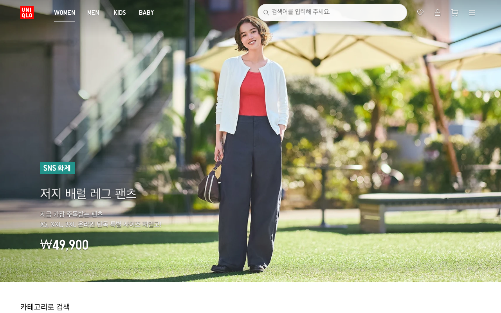

Design System Report
UNIQLObrand-global-ec-uikit + ec-components
실제 CSS 3개 번들을 확인하면 UNIQLO의 시각 언어는 red-first라기보다 black/white/gray utility system에 가깝다. red는 분명 존재하지만 promo, error, favorite heart처럼 작은 상태 면적에 제한적으로만 쓰인다.

#FF0000가 발견되지 않았다. brand red 계열 literal은 #e00, #ee3535, #ef5555, #dd3535로 나타난다.
Source
uniqlo.com/us/en
navigation CSS bundles
Fetched
2026-04-23
curl_cffi Safari impersonation
Bundles
3
559,312 / 136,687 / 89,234 bytes
Confirmed `--ec-*`
11
search, nav, tabs, product table
/* 1. typography */
:root {
--font-display: UniqloProRegular, sans-serif;
--font-display-light: UniqloProLight, system-ui, -apple-system, sans-serif;
--font-body-en: "Twemoji Country Flags", "Helvetica Neue", Helvetica, Arial, system-ui, -apple-system, sans-serif;
--font-weight-light: 300;
--font-weight-regular: 400;
--font-weight-semi-bold: 600;
--letter-spacing-uniqlo-pro: 0.025rem;
--line-height-body: 1.5;
}
/* 2. colors */
:root {
--fg: #000;
--fg-hover: #2a2a2a;
--fg-pressed: #3e3e3e;
--fg-muted: #6a6a6a;
--fg-disabled: #ababab;
--bg: #fff;
--bg-subtle: #f4f4f4;
--border: #dadada;
--brand-accent: #e00;
--brand-accent-hover: #ef5555;
--utility-link: #005db5;
--utility-link-hover: #006ed7;
}
/* 3. shape + layout */
:root {
--radius-ui: 0;
--radius-pill: 999px;
--space-12: 12px;
--space-16: 16px;
--nav-height-lg: 64px;
--nav-height-sm: 56px;
--target-min: 44px;
}
.button,
.chip,
.tab {
border-radius: var(--radius-ui);
min-height: var(--target-min);
}
01
분위기와 철학
UNIQLO의 downloaded CSS는 미니멀 브랜드 이미지를 구체적인 utility token으로 환원한다. black action surfaces, white canvas, gray separation, narrow red accents가 핵심이다.
Monochrome First
literal color count 상위는 #FFFFFF, #000000, #DADADA, #ABABAB 순이다. red보다 white/black/gray가 더 자주 등장한다.
Red Is Sparse
#e00 계열은 promotional, error, selected-heart, red dot indicator 같은 작은 상태 면적에 집중된다.
Typography Split
Latin UI는 UniqloPro* family가 담당하고, body text는 Helvetica/Arial/system stack으로 떨어진다. locale-specific selector 분기도 분명하다.
Square Utility
button height 32/40/50/52용 radius token이 모두 0이다. rounded lifestyle card가 아니라 square retail utility grammar다.
02
출처와 수집 기준
값은 모두 실제 다운로드된 CSS literal, selector, custom property만 사용했다. HTML screenshot은 설명 보조 용도이고 token source는 전부 CSS다.
| Source URL | https://www.uniqlo.com/us/en |
|---|---|
| Extractor | python3 + curl_cffi with requests.Session(impersonate="safari") |
| Referer | https://www.uniqlo.com/ |
| Bundle 1 | brand-global-ec-uikit-ece049ccc6d736d49b41.css — 559,312 bytes |
| Bundle 2 | fr-ito-web-react-ece049ccc6d736d49b41.css — 136,687 bytes |
| Bundle 3 | ec-components-ece049ccc6d736d49b41.css — 89,234 bytes |
| Total inspected CSS | 785,233 bytes |
| @font-face | UniqloProRegular, UniqloProBold, UniqloProLight, swiper-icons |
Confirmed --ec-* | 11 custom properties |
Literal #FF0000 | not found in these bundles |
03
테크 스택
downloaded asset naming과 selector structure 기준으로 정리한 CSS architecture 요약이다.
Bundle split
brand-global-ec-uikit가 global token과 utility layer를, ec-components가 search / tabs / product-table용 module token을 제공한다. fr-ito-web-react라는 asset name도 함께 확인된다.
Class naming
.fr-ec-*, .ec-*, .navigation-*, .tab-group-*, .product-table*처럼 기능명 중심 naming이다.
Theme
default는 light다. --fill-secondary-color: #fff, --fill-background-color: #f4f4f4, --text-primary-dark-color: #000가 기본 축이다.
Responsive
core breakpoints는 599px, 600px, 959px, 960px, 1249px다. --grid-size-lg는 1200px이다.
04
타이포그래피
Latin custom font와 locale-specific system stack이 동시에 존재한다. body text는 의외로 system stack 비중이 높고, display/UI만 custom family가 강하게 걸린다.
Font stack
UniqloProBold, system-ui, -apple-system, sans-serifUniqloProRegular, sans-serifUniqloProLight, system-ui, -apple-system, sans-serif"Twemoji Country Flags", "Helvetica Neue", Helvetica, Arial, system-ui, -apple-system, sans-serif"Twemoji Country Flags", "ヒラギノ角ゴ Pro", ... , sans-serif
Weights and rhythm
weights는 300 / 400 / 500 / 600 / 700 / 800. line-height token은 1 / 1.1 / 1.2 / 1.3 / 1.4 / 1.5. tracking token은 0.025rem 하나가 명시적으로 잡혀 있다.
| Scale | Token | Value | Representative selector |
|---|---|---|---|
| Latin | --type-scale-latin-minus-2 | 0.75rem | .caption--small |
| Latin | --type-scale-latin-minus-1 | 0.875rem | .title--standard |
| Latin | --type-scale-latin-base | 1rem | .label--small |
| Latin | --type-scale-latin-plus-1 | 1.125rem | .display--display5 |
| Latin | --type-scale-latin-plus-2 | 1.25rem | .title--media-banner-product-name |
| CJK | --type-scale-cjk-minus-1 | 0.8125rem | .body--small |
| CJK | --type-scale-cjk-base | 0.9375rem | .body--standard |
| CJK | --type-scale-cjk-plus-3 | 1.375rem | .display--display3 |
| CJK | --type-scale-cjk-plus-5 | 1.875rem | .display--display2 |
| CJK | --type-scale-cjk-plus-6 | 2.25rem | .display--display1 |
05
컬러
red·white·black 브랜드 인상은 분명하지만, CSS literal로 보면 white / black / gray가 더 자주 나온다. blue와 green은 utility/state 역할이다.
Primary fill
#000
Secondary / white
#fff
Surface
#f4f4f4
Divider
#dadada
Muted text
#6a6a6a
Disabled
#ababab
Promo / error red
#e00
Red hover
#ef5555
Heart hover
#dd3535
Noticeable
#005db5
Noticeable hover
#006ed7
Positive
#00ab0f
| Rank | Hex | Count | Role |
|---|---|---|---|
| 1 | #FFFFFF | 266 | canvas / neutral surfaces |
| 2 | #000000 | 188 | text / fill / active state |
| 3 | #DADADA | 172 | lines / separators |
| 4 | #ABABAB | 115 | disabled / low-emphasis text |
| 5 | #EE0000 | 86 | promo / error accent |
| 6 | #6A6A6A | 81 | muted text / secondary border |
| 7 | #F4F4F4 | 77 | surface background |
| 8 | #005DB5 | 73 | noticeable / link utility |
06
스페이싱
spacing scale은 4px base를 그대로 노출한다. 44px minimum target과 52px navigation spacing이 같이 보인다.
| Token | Value | Observed use |
|---|---|---|
--spacing4 | 4px | app icon offset, tight gaps |
--spacing8 | 8px | product tile bottom margin |
--spacing12 | 12px | search button horizontal padding |
--spacing16 | 16px | product table left padding |
--spacing24 | 24px | navigation search right spacing token family |
--spacing44 | 44px | minimum target size echo |
--spacing52 | 52px | desktop gender tab left padding |
--spacing88 | 88px | large spacing token |
07
라디우스
generic radius token은 존재하지만 action/button tier의 raw radius token이 전부 0이어서 실제 인상은 매우 square하다.
| Token | Value | Meaning |
|---|---|---|
--border-radius-pill | 999px | pill / chip |
--border-radius-round | 0 | core square bias |
--border-radius-button-h-32 | 0 | button radius |
--border-radius-button-h-40 | 0 | button radius |
--border-radius-button-h-50 | 0 | button radius |
--border-radius-button-h-52 | 0 | button radius |
--borderRadius4 | 4px | generic small radius |
--borderRadius8 | 8px | generic medium radius |
--borderRadius12 | 12px | generic large radius |
--borderRadius16 | 16px | generic extra radius |
08
섀도우
shadow는 존재하지만 black-on-white utility UI에 맞춰 매우 보수적이다. blur가 커져도 opacity는 낮다.
| Token | Value | Signal |
|---|---|---|
--shadow-floating | 0px 2px 4px #0003 | floating surfaces |
--shadow-floating-er | 0px 0px 10px #0000001a | extended blur |
--shadow-other | 0px 2px 2px #0009 | denser edge shadow |
--shadow-chip | 0px 0px 4px #000c | chip shadow |
--shadowBottom1 | 0px 1px 1px #00000080 | subtle elevation |
--shadowBottom4 | 0px 2px 4px #0000001a | panel/flyout |
09
모션
duration token은 150ms부터 500ms까지 있고 easing은 material-like cubic-bezier family다.
| Token | Value |
|---|---|
--animate-duration-shortest | 150ms |
--animate-duration-micro | 180ms |
--animate-duration-shorter | 200ms |
--animate-duration-enter | 225ms |
--animate-duration-normal | 300ms |
--animate-duration-complex | 375ms |
--animate-duration-macro | 500ms |
--animate-ease-in-out | cubic-bezier(0.4,0,0.2,1) |
--animate-ease-out | cubic-bezier(0.0,0,0.2,1) |
--animate-ease-sharp | cubic-bezier(0.4,0,0.6,1) |
10
레이아웃 패턴
layout token은 매우 구체적이다. grid width, header height, logo size, tabs width, search width가 모두 custom property로 드러난다.
| Token | Value | Meaning |
|---|---|---|
--root-font-size | 16px | base font size |
--min-target-size | 44px | minimum tap area |
--grid-size-lg | 1200px | main grid width |
--grid-size-lg-limit-with-fixed-margin | 1248px | fixed margin threshold |
--grid-size-lg-limit-with-auto-margin | 1249px | auto margin threshold |
--ec-navigation-header-height-lg | 64px | desktop header |
--ec-navigation-header-height-sm | 56px | mobile header |
--ec-tabs-max-width | 412px | centered tabs |
--ec-search-max-width | 976px | navigation search content |
--ec-product-table-content-gap | 1px | comparison table gap |
.navigation-header__wrapper {
height: var(--ec-navigation-header-height-lg);
}
.navigation-search__content {
max-width: var(--ec-search-max-width);
width: 100%;
}
.navigation-header__gender-tab__center .tab-group-outer-wrapper {
max-width: var(--ec-tabs-max-width);
width: 100%;
}
11
반응형
599 / 959 / 960 경계가 search, navigation, logo sizing에 직접 연결된다.
| Breakpoint | Value | Observed behavior |
|---|---|---|
| small max | 599px | header 56px, logo 63 × 28, search button 231px / 38px |
| medium min | 600px | app download button wrapper hidden |
| medium max | 959px | center gender tabs hidden, search width 324px |
| large min | 960px | header 64px, search width 382px, center tabs restored |
| auto margin threshold | 1249px | grid auto margin limit |
.ec-button--search-bar {
max-width: var(--ec-search-bar-button-max-width-lg);
padding: 0 var(--spacing12);
width: 100vw;
}
@media screen and (max-width:959px) {
.ec-button--search-bar { max-width: var(--ec-search-bar-button-max-width-md); }
}
@media screen and (max-width:599px) {
.ec-button--search-bar {
height: var(--ec-search-bar-button-height-sm);
max-width: var(--ec-search-bar-button-max-width-sm);
}
}
12
컴포넌트
`--ec-*` namespace는 navigation/search/product-table처럼 실제 e-commerce module에 집중된다.
Navigation header
- background —
#fff - wrapper height —
64px/56px - logo max size —
75px × 34px/63px × 28px - tabs max —
412px - search max —
976px - red dot indicator —
6px × 6px,background: #e00
Search bar button
- desktop max width —
382px - tablet max width —
324px - mobile max width —
231px - mobile height —
38px - padding —
0 12px - tappable offset —
-3px
Tab group
- border bottom —
1px solid #dadada - active tab color —
#000 - active hover —
#2a2a2a - fit-content variation removes border and uses even spacing
Product comparison table
- table left padding —
16px - inner gap —
1px - tile bottom margin —
8px - layout uses fixed table layout for comparison cells
13
네이밍 톤
CSS만 기준으로 보면 copy tone 자체보다 state/function naming이 훨씬 명확하게 드러난다.
Observed naming pattern
primary, secondary, promotional, noticeable, positive, selected-heart, navigation-search, product-table처럼 utilitarian naming이 우세하다. 감성적인 naming보다 기능과 상태를 우선하는 retail utility 톤이다.
14
CSS / Tailwind Export
아래 preset은 모두 실제 CSS literal과 custom property만으로 구성했다.
CSS tokens
:root {
--uq-font-display: UniqloProRegular, sans-serif;
--uq-font-display-light: UniqloProLight, system-ui, -apple-system, sans-serif;
--uq-font-body-en: "Twemoji Country Flags", "Helvetica Neue", Helvetica, Arial, system-ui, -apple-system, sans-serif;
--uq-fg: #000;
--uq-fg-hover: #2a2a2a;
--uq-fg-pressed: #3e3e3e;
--uq-fg-muted: #6a6a6a;
--uq-fg-disabled: #ababab;
--uq-bg: #fff;
--uq-bg-subtle: #f4f4f4;
--uq-border: #dadada;
--uq-brand: #e00;
--uq-brand-hover: #ef5555;
--uq-brand-heart-hover: #dd3535;
--uq-link: #005db5;
--uq-link-hover: #006ed7;
--uq-positive: #00ab0f;
--uq-radius: 0;
--uq-radius-pill: 999px;
--uq-shadow-floating: 0px 2px 4px #0003;
--uq-space-12: 12px;
--uq-space-16: 16px;
--uq-space-44: 44px;
--uq-space-52: 52px;
--uq-nav-h-lg: 64px;
--uq-nav-h-sm: 56px;
--uq-search-max: 976px;
--uq-tabs-max: 412px;
}Tailwind theme
export default {
theme: {
extend: {
colors: {
uniqlo: {
black: "#000",
blackHover: "#2a2a2a",
blackPressed: "#3e3e3e",
white: "#fff",
surface: "#f4f4f4",
border: "#dadada",
muted: "#6a6a6a",
disabled: "#ababab",
red: "#e00",
redHover: "#ef5555",
redHeartHover: "#dd3535",
blue: "#005db5",
blueHover: "#006ed7",
positive: "#00ab0f"
}
},
fontFamily: {
uniqlo: ["UniqloProRegular", "sans-serif"],
uniqloLight: ["UniqloProLight", "system-ui", "-apple-system", "sans-serif"],
body: ["Twemoji Country Flags", "Helvetica Neue", "Helvetica", "Arial", "system-ui", "-apple-system", "sans-serif"]
},
borderRadius: {
none: "0",
pill: "999px"
},
screens: {
uqMd: "600px",
uqLg: "960px"
}
}
}
};15
에이전트 가이드
실제 token을 유지하면서 UNIQLO-like UI를 생성하려면 아래 제약을 그대로 가져가면 된다.
#fffcanvas,#000action,#dadadaborder,#6a6a6amuted text로 시작한다.- red accent는
#e00family만 사용하고 promotional / error / favorite heart처럼 작은 상태에 제한한다. - utility link/focus는
#005db5→#006ed7pair로 분리한다. - button, tab, chip의 기본 radius는
0으로 둔다. - 44px minimum target, 64px desktop header, 56px mobile header, 382/324/231px search widths를 유지한다.
- Latin display에는
UniqloProRegular/UniqloProLightfamily를 우선하고, body는 system stack으로 자연스럽게 떨어지게 둔다.
16
Do / Don’t
downloaded CSS token과 충돌하지 않게 재현할 때의 기준선이다.
Do
- black action ramp를 기본 동작색으로 사용한다.
#fff/#f4f4f4/#dadada위계로 surface를 나눈다.#e00를 작은 상태 color로만 사용한다.- button, tab, chip의 기본 corner를 square로 유지한다.
- 599 / 959 / 960 breakpoint 체계를 그대로 사용한다.
Don’t
#FF0000full-fill CTA를 primary button 기본값으로 두지 않는다.- 12px / 16px rounded card를 기본 UI 문법으로 확대하지 않는다.
#005db5를 브랜드 메인 컬러처럼 확대하지 않는다.- neutral text를 pure black 하나로만 처리하지 않는다.
#6a6a6a/#ababab계층을 유지한다. - search / nav / product table의 실제 max-width 수치를 임의로 바꾸지 않는다.